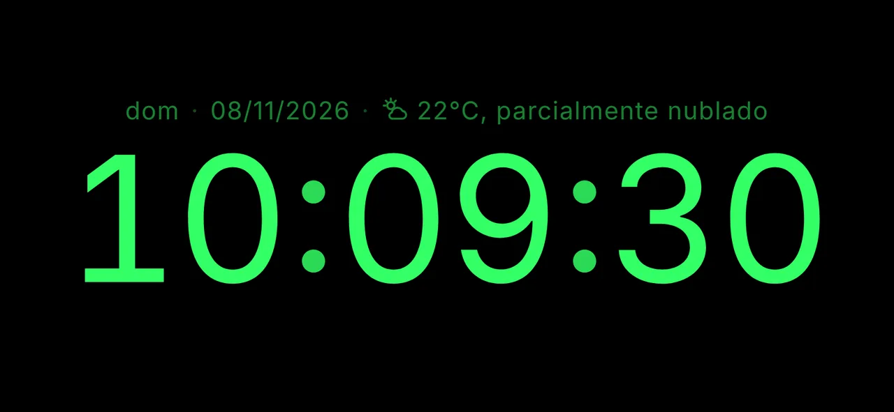
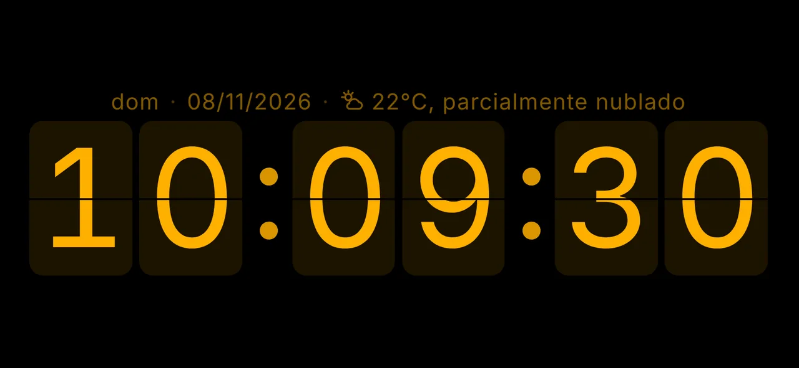
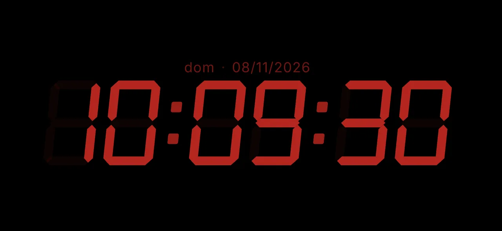
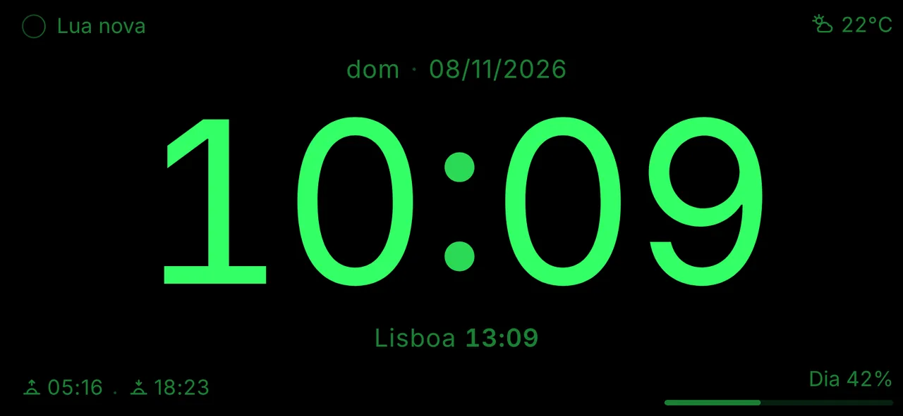
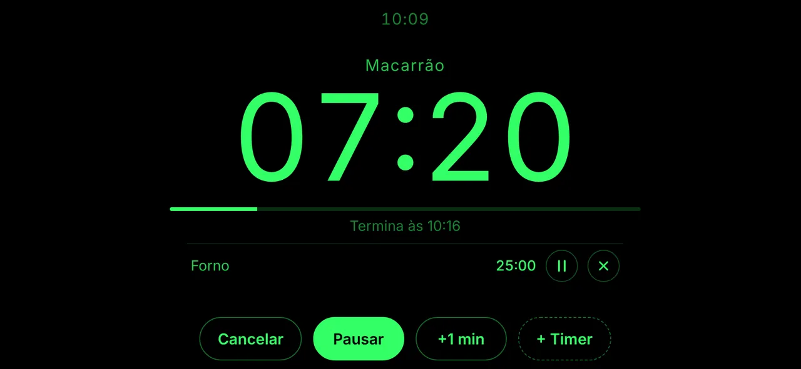
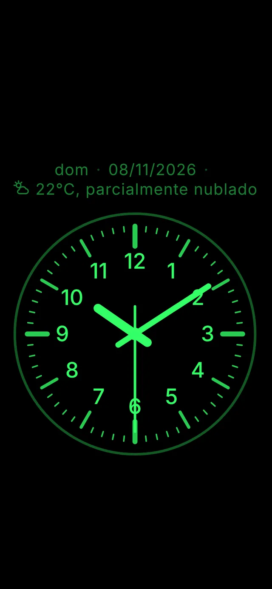
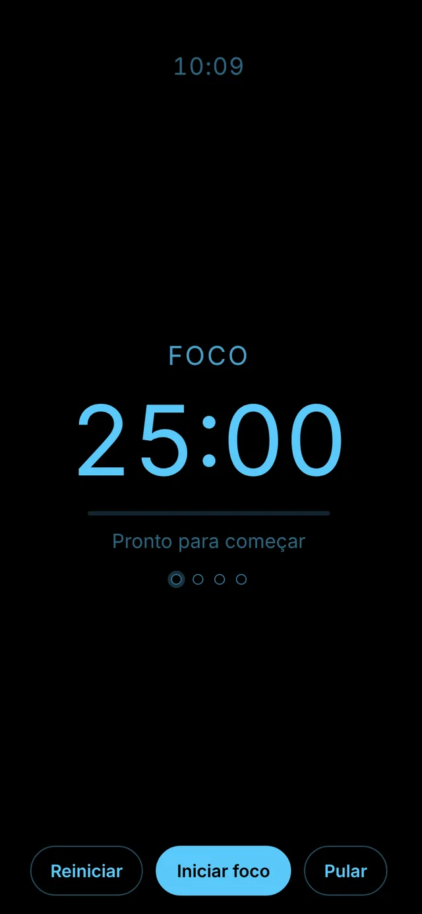

Seu celular como relógio de mesa.
Sem anúncios.
O NADA Clock (No Ads, Display Always) é um relógio de mesa minimalista para iPhone e Android. A tela fica ligada e nada aparece por cima do relógio. Grátis, sem cadastro e sem passar pela loja de apps.

Por que ele existe
Os apps de relógio de mesa que encontrei tinham anúncios e, em algum momento, o anúncio aparecia justamente por cima do relógio.
O NADA Clock nasceu para ser o contrário: só o tempo na tela. É um projeto pessoal, de código aberto, feito para uso próprio e compartilhado com quem quiser usar.
Como instalar
Não precisa de App Store nem de Play Store. Você adiciona o relógio à tela de início pelo navegador e ele passa a abrir como um app: em tela cheia e funcionando offline.
iPhone (Safari)
- Abra ofeliper.github.io/nada-clock/ no Safari.
- Toque em Compartilhar (o quadrado com a seta para cima).
- Escolha Adicionar à Tela de Início e confirme.
- Abra o NADA Clock pelo ícone. A tela fica ligada enquanto o relógio estiver aberto (iOS 18.4 ou mais recente).
Android (Chrome)
- Abra ofeliper.github.io/nada-clock/ no Chrome.
- Toque no menu ⋮ e escolha Instalar app (ou Adicionar à tela inicial).
- Abra o NADA Clock pelo ícone.
- Rotação travada? Toque na tela e use o botão de girar na barra do topo para ver o relógio na horizontal.
- Bateria: com a tela sempre ligada, o ideal é deixar o celular no carregador.
O que ele faz
Digital ou analógico
Fonte arredondada, LED de 7 segmentos ou plaquinhas que viram (flip). Formato 12 h ou 24 h e segundos opcionais. Um toque troca entre digital e analógico.
Tela sempre ligada
Brilho ajustado deslizando o dedo para cima e para baixo. Modo noturno por horário, com vermelho escuro e brilho reduzido.
Mostrador do seu jeito
Onze posições ao redor do relógio para data, temperatura, outro fuso, fase da lua, nascer e pôr do sol, contagem regressiva ou texto livre. Arraste para reorganizar, salve presets e compartilhe por link ou QR code.
Clima
Temperatura e condição do tempo (“22 °C, parcialmente nublado”), sensação térmica, máxima e mínima e chance de chuva.
Timer, cronômetro e pomodoro
Vários timers ao mesmo tempo, com nome. Cronômetro com voltas. Pomodoro com ciclos de foco e pausas.
Feito para ficar na mesa
Proteção contra burn-in, bloqueio de toques, horizontal forçada, modo espelho e sons opcionais de tic-tac e de hora cheia.
Funciona offline, em português, inglês e espanhol, e tem backup das configurações.
Veja como fica






Privacidade
Sem anúncios, sem conta e sem rastreamento. Suas preferências ficam salvas só no seu aparelho.
Serviços externos são usados apenas quando você ativa o recurso correspondente: Open-Meteo (clima, licença CC BY 4.0, e busca de cidades) e GeoJS (localização aproximada pelo endereço IP). A localização é arredondada (~1 km) e não sai do seu aparelho, exceto nessas consultas.
Perguntas frequentes
Preciso baixar na App Store ou na Play Store?
Não. O NADA Clock é um web app (PWA): você o adiciona à tela de início pelo navegador e ele funciona como um app, em tela cheia e offline.
É grátis?
Sim, sem anúncios e sem compras. O código é aberto, sob a licença MIT.
Por que a tela apaga no iPhone?
Manter a tela ligada exige iOS 18.4 ou mais recente e que o relógio seja aberto pelo ícone da tela de início, não por uma aba do Safari.
O alarme toca com o app fechado?
Não. Por ser um web app, o timer, o pomodoro e os sons só tocam com o relógio aberto na tela.
Por que a temperatura não aparece?
Ela precisa de uma localização: GPS (com permissão), aproximada pela internet (sem permissão) ou uma cidade escolhida. Defina em Configurações → Localização.
Como atualizo para a versão mais nova?
Em Configurações → Geral, toque em “Procurar atualização”. Quando sai uma versão nova, o próprio relógio também mostra um aviso.
Sugestões e problemas
Tem uma ideia ou encontrou um problema? Abra uma issue no GitHub (é preciso ter uma conta gratuita).